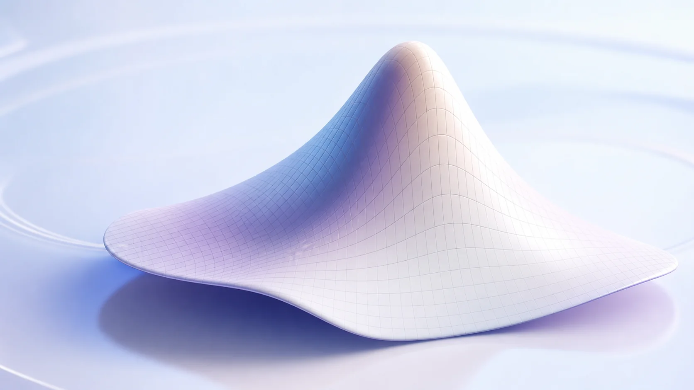
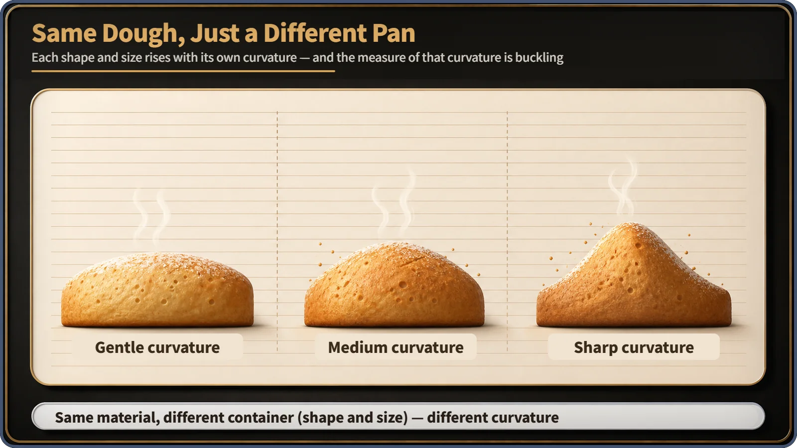
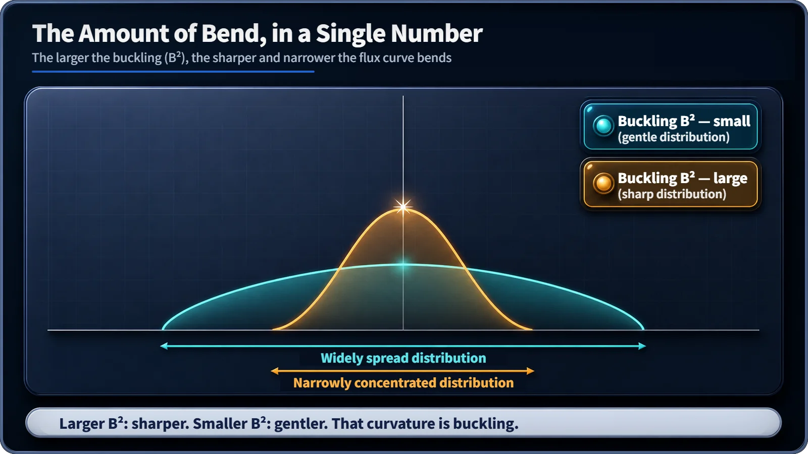

Neutron Physics & the Core · 091
Same Dough, Different Pan — Buckling, the Reactor's Language of Shape
The same fuel in a different core shape bends the neutron flux differently. Buckling is the number that captures that bend.

Buckling (B²) is a single number that measures how strongly the neutron flux inside a reactor core is bent: how sharply it peaks in the middle and falls off toward the edges. It comes straight out of the steady-state neutron diffusion equation, ∇²φ + B²φ = 0, and it is tied both to the core's shape and size and to the material that fills it. [1]
Same dough, different pan
Look closely at a bakery shelf. The same dough, the same oven and the same temperature, yet a loaf from a square pan, one from a cylinder tin and one from a dome mold all come out with different tops: one a gentle, low hump, another a much sharper peak. The dough was identical, so why does the amount of bend differ so much?
Almost the same question comes up inside a reactor core. What is being baked there is the distribution of neutrons, and the name for that amount of bend is buckling.
Why the curve changes
Neutrons are not spread evenly through a core. The middle is crowded, the numbers fall off toward the edges, and near the boundary they almost vanish. The quantity that describes how many neutrons pass through a given spot, and how actively, is the neutron flux. Plot it from one side of the core to the other and you get a curve that bulges in the middle, like the cross-section of a risen loaf.
That curve does not always have the same shape. In some cores it spreads into a broad hump; in others it bunches into a sharp peak. The single number that sums up this curvature is buckling, written B².

Curvature as a number
Reactor physics has an equation that describes, all at once, how neutrons spread through the core, are absorbed and are born anew. Written for a steady state, it reduces to a strikingly simple relationship:
∇²φ + B²φ = 0
Here φ is the neutron flux and ∇² (the Laplacian) is an operator that measures how much a point dips or bulges compared with its surroundings, in other words the curvature. In plain words, the equation says that the curvature of the flux curve is proportional to the flux itself, and the constant of proportionality is the buckling: B² = −∇²φ/φ. [1]
For the simplest case, a flat slab-shaped core, the solution is a cosine, φ(x) = φ₀ cos(Bx). When B (the square root of the buckling) is large, the cosine bends quickly and bunches sharply toward the middle; when B is small, the curve is gentler and wider. A sharply peaked loaf has a large buckling; a gently risen one has a small buckling. [2]

Shape and material at once
Buckling is decided from two directions at the same time. From one side, it follows mathematically once the core's shape and size are fixed: the same fuel and moderator mix poured into a slab, a cylinder or a sphere, large or small, gives a different curvature.
From the other side, it is set by how well the material in the core produces and absorbs neutrons: its composition, such as fuel enrichment and the type and proportion of moderator. Even in the same pan, a different dough recipe rises by a different amount.
So buckling is both a requirement (this shape and size demand this much bend) and a capability (this material can produce this much bend). Where the two match exactly, the core reaches a special state, which is the subject of the next steps in this series. For now, remember that buckling is one yardstick reaching into both the shape side and the material side. [2]
Not the buckling of a bent column
In structural and mechanical engineering, buckling means a column or steel plate bowing sideways and collapsing under too much compression. It is the same English word, but reactor-physics buckling has nothing to do with structural failure. No plate or structure in the core bends; the term only describes the mathematical curvature of the neutron flux distribution, a different matter entirely from the mechanical integrity of core structures.
Where buckling is used
Buckling is mainly a language of reactor design. The core's shape and size are chosen at the design stage, and buckling is the yardstick that checks whether that choice fits the neutron-producing ability of the material inside. Once a reactor is running, its shape and size do not change, so buckling is not something operators adjust in real time, unlike inserting control rods or changing the boron concentration in the coolant.
Key takeaways
Buckling (B²) measures how strongly the neutron flux distribution is bent. A larger value means flux bunched sharply toward the center, a smaller value a gentler, wider spread. It touches both the core's geometry and the neutron-producing ability of its material, it has nothing to do with structures physically bending, and it is chiefly a design-stage concept.